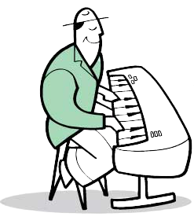
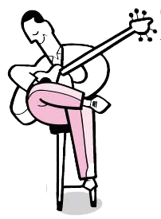
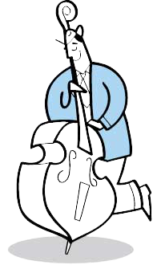
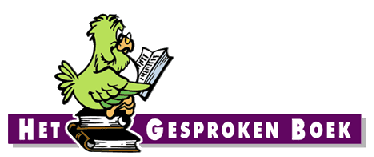
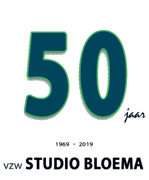

<div>
    <div class="jumbotron">
      <div class="container-fluid mb-5">
        

        <p class="lead"> Studio Bloema is een vrijwilligersorganisatie uit de regio Kortrijk.
        Het is een erkende vzw met twee werkgroepen: het Seniorencafé en het
        Gesproken Boek. De vzw heeft zijn eigen opnamestudio in hartje
        Kortrijk</p>
      </div>

      <div class="px-5 py-4">
        <div class="row">
          <div class="container-fluid p-4">
            <div class="d-flex justify-content-center pb-4">
              
            </div>
            <div class="hover">
                <div class="d-flex justify-content-around">
                  <div class="mt-auto">
                    
                  </div>
                  <div class="mt-auto ">
                    
                  </div>
                  <div class="mt-auto ">
                    
                  </div>
                  <div class="mt-auto ">
                    
                  </div>
                </div>
            </div>
            <hr />
            <h3 >SeniorenCafé</h3>
            <p class="lead"> Seniorencafé staat garant voor een tweewekelijks
            radioprogramma speciaal gemaakt voor senioren. Seniorencafé
            wil via gerichte seniorenradio zorgen voor een uur
            ontspanning. Seniorencafé is in de sector van de bejaardenzorg
            een aangename aanvulling bij de animatie binnen diverse
                werkingen.</p>
          </div>
        </div>
      </div>


      <div class="px-5 py-4">
        <div class="row">
          <div class="col p-4">
            <h3 >Het Gesproken Boek</h3>
            <p class="card-text lead mb-auto">Het Gesproken Boek is een werkgroep die luisterboeken inleest
            voor blinden, slechtzienden en anderen die problemen hebben
              met de gebruikelijke vorm van lezen.</p>
          </div>
          <div class="col-auto d-none d-lg-block border-left">
            
          </div>
        </div>
      </div>

      <div class="px-5 py-4">
        <div class="row">
          <div class="col-auto d-none d-lg-block border-right">
            
          </div>
          <div class="col p-4 d-flex flex-column position-static">
            <h3 >50 jaar studio bloema</h3>
            <p class="card-text lead mb-auto">Studio Bloema vierde in 2019 zijn 50e verjaardag. Op zaterdag
            23 maart 2019 waren we uitgenodigd in het stadhuis van
              Kortrijk, en toen heeft Johan ons getrakteerd op deze film:</p>
          </div>

        </div>
      </div>


      <div class="px-5 py-4">
        <div class="embed-responsive embed-responsive-16by9">
          <video
          class="embed-responsive-item controls"
            controls
            src="../../../assets/images/film_studio_bloema.mp4"
            allowfullscreen
          ></video>

        </div>
      </div>
    </div>
  </div>